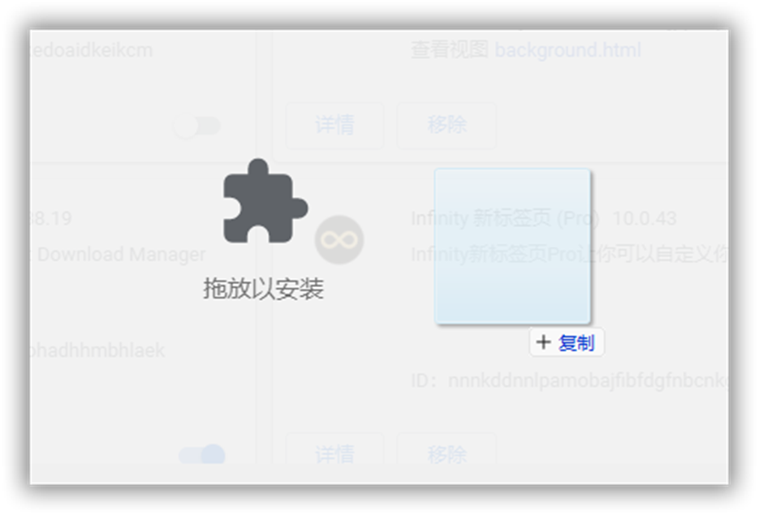
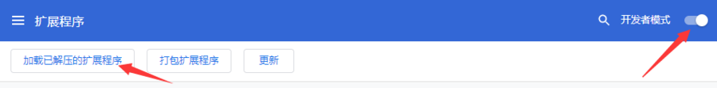
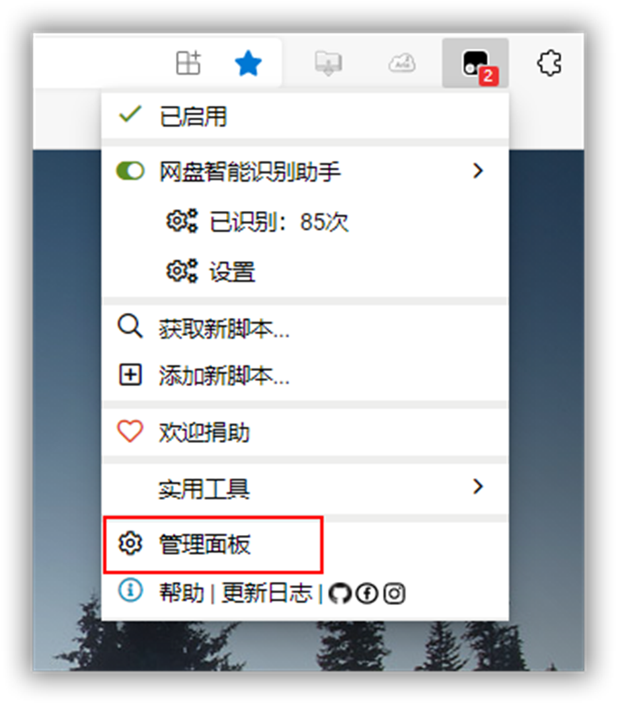
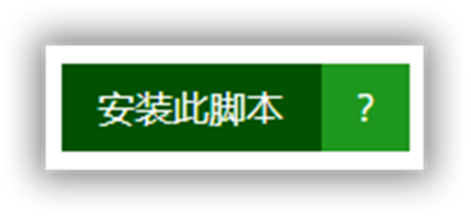
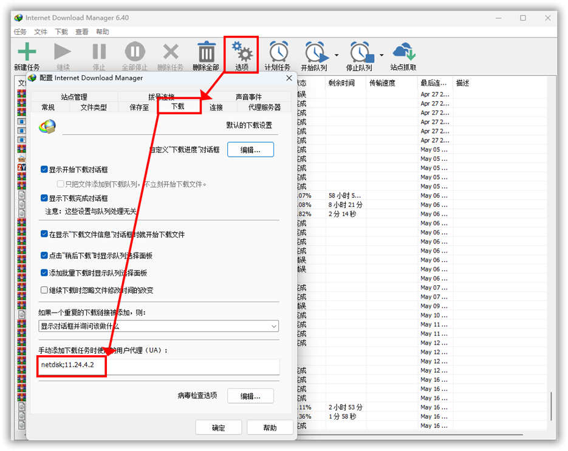
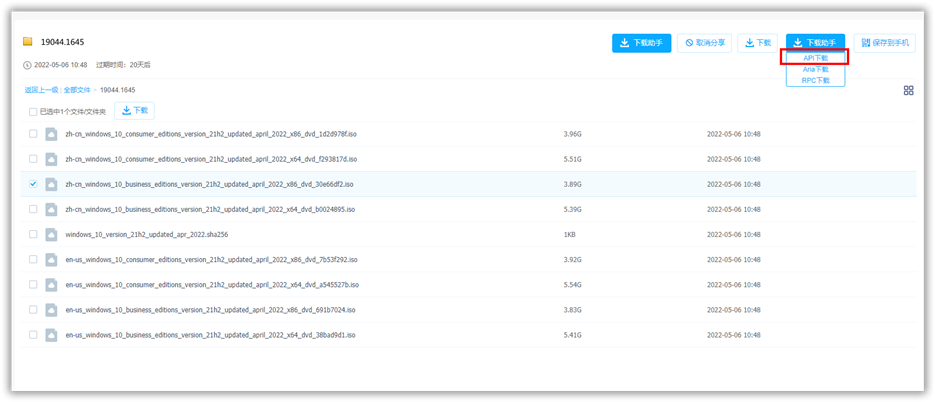
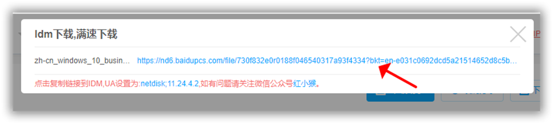
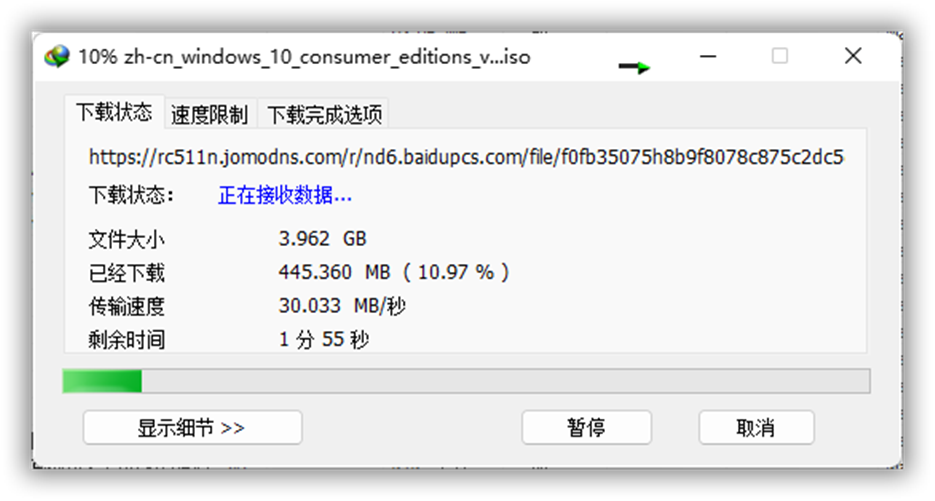
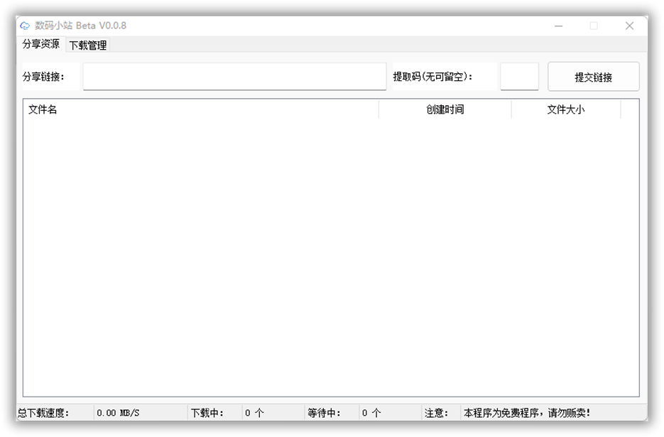
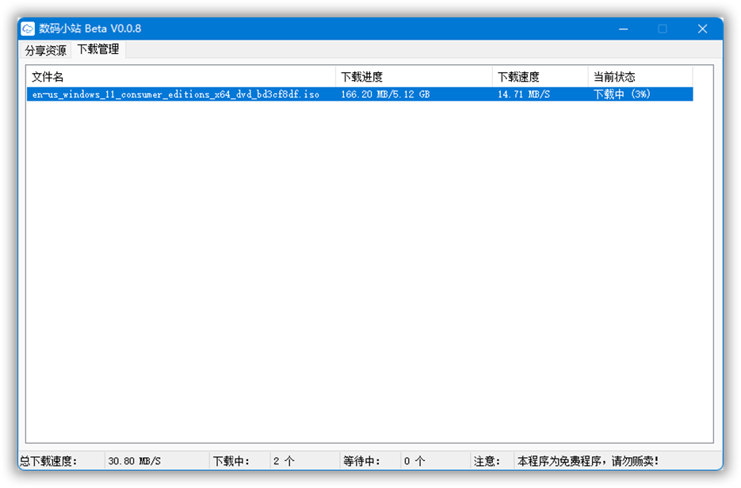

百度网盘下载
关于百度网盘限速，有两类方法“解除限速”。最为稳定的还是“油猴脚本+IDM”大法。客户端的软件提供两款：1、Antdownload下载器；2、数码小站。
其实这么多年来，最为稳定的还是“油猴脚本+IDM”大法，长久不衰，虽然脚本一直在换，不同的作者前赴后继的开发出各种好用的脚本供大家使用。一个不能用了，我们总能很快通过搜索，找到下一个可用的脚本。此法也可用于阿里云盘、天翼云盘等（安装对应的油猴脚本即可）。
只需两步：1、首先需要安装一个浏览器扩展程序——猴子脚本管理器。2、安装各种功能的⌈油猴脚本⌋。设置完一次，以后就一劳永逸了。
油猴脚本+IDM
第1步：安装猴子脚本管理器
打开官网：
https://greasyfork.org/zh-CN
如果是Edge浏览器，直接在扩展商店里搜索“Tampermonkey”，然后安装即可。
如果是Chrome内核浏览器，不会科学上网的小伙伴，推荐一个网站：⌈极简插件⌋极简插件，可以前往下载，都是谷歌商店原版的插件。
安装方法：Chrome浏览器右上角三个小点→更多工具→扩展程序→打开“开发者模式”。将下载的crx插件拖放到浏览器中，如下图，然后弹出的对话框，点击“添加扩展程序”即可完成。
Chrome浏览器对插件管理的非常严格，如果不是应用商店的版本，可能无法安装或无法使用。这里再提供一个暴力的安装方法（可使用此方法，安装来源可靠的插件）：下载的扩展程序（或插件）拓展名为crx，将crx改为zip然后解压。浏览器右上角三个小点→更多工具→扩展程序→打开“开发者模式”，然后点击“加载已解压的扩展程序”，找到刚才解压的文件即可成功安装。
经过上述步骤，猴子脚本管理器就已经安装完成了，点击浏览器右上角的图标，点击“管理面板”，在这里面就可以看到已经安装了的油猴脚本。
第2步：安装⌈油猴脚本⌋
打开网址：
https://greasyfork.org/zh-CN/scripts/425895
点击“安装此脚本”，按提示即可成功安装。（成功安装后，按钮“安装此脚本”会变为“重新安装”）
第3步：设置“下载工具IDM”
用到的下载工具依然是《最强下载工具IDM》，需要设置一下IDM参数。 将UA设置如下：
第4步：满速下载
使用浏览器打开下载页面。选中要下载的文件，点击右上角的“下载助手”→“API下载”。
自动解析，成功后会弹出如下窗口，点一下链接即复制。然后使用IDM下载即可。
体验一下这下载速度。
Antdownload下载器
中文名“蚂蚁下载器”，它可以无需登录百度网盘的账号，即可高速下载文件、文件夹内容。目前网上各类不限速下载工具中，貌似这是唯一能够批量打包下载的软件。
打开软件后，将百度网盘的下载链接和提取码填写到左上角的相应位置，然后点击“获取文件”，稍等片刻后即可得到文件列表。最后鼠标右键选中，点击下载即可。下图中，测试下载文件，速度大约20MB/s。
antdownload由于是易语言开发，易语言有个通病就是有些系统不兼容程序，容易报错，报毒。
若不能使用，请下载最新版。另外不要改软件名，否则会导致无法使用。
链接：
https://wwt.lanzouy.com/irpcr05d3iqb
数码小站
“数码小站”，是一款免费的百度网盘不限速下载工具，可以将度盘资源的分享链接满速下载。这个工具原理就是通过百度云链接解析接口编译成简易图形界面，然后利用内置的Aria2多线程下载资源。
无需登录百度云的账户，即可满速下载。所以不用担心账户被封的可能性。直接将下载链接+提取码，复制到软件中，点击“提交链接”，即可看到下载内容。
下载后的文件，将自动保存在“数码小站.exe”同一目录的“下载”文件夹中。
总结：
1、使用“油猴脚本+IDM”大法。
2、使用软件客户端。目前有Antdownload、数码小站。这里面目前最好用的是Antdownload。